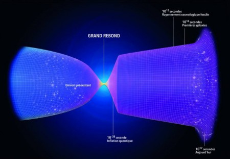
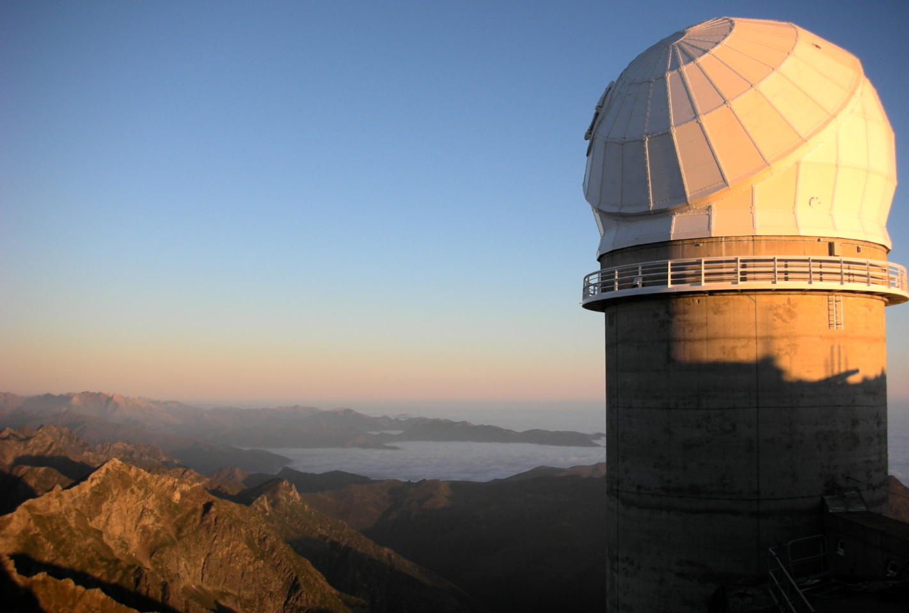
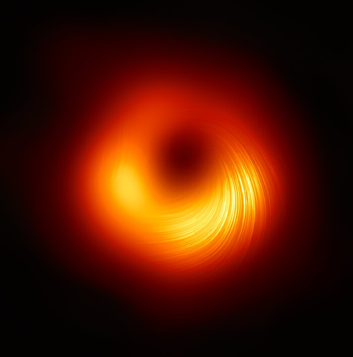
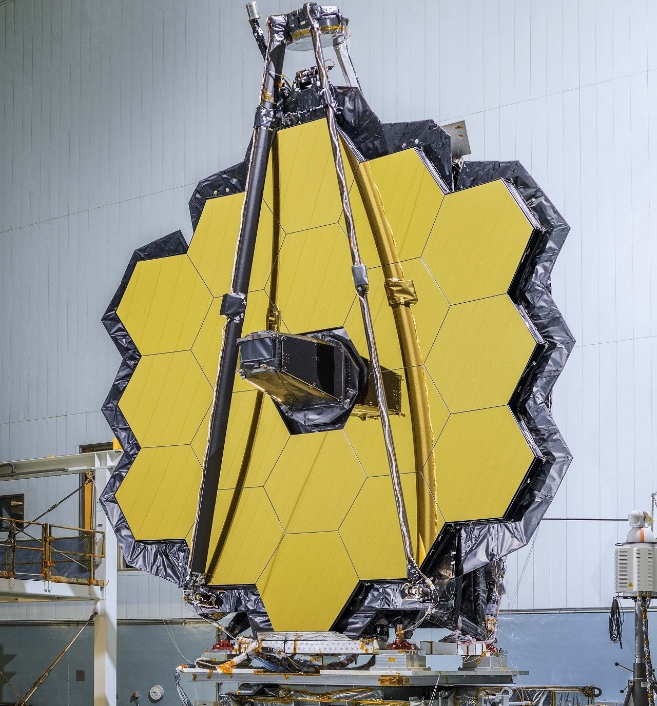

Les articles :

|
Le Blob Le Physarum Polycephalum, aussi connu sous le nom de Blob, est un être vivant unicellulaire qui permet aux scientifiques des avancées dans les laboratoires. Il ne craint... |
|
Le calcul de la circonférence de la Terre Alors que la reconnaissance de la sphéricité de notre planète ne se fera qu’au XVIème siècle après J.C., sous l’impulsion de grands scientifiques comme... |
|
|  |
Projet Gravitation Cet article présente les différents modèles de gravité quantique ou théorie du tout. La théorie du tout consiste à unifier les deux plus grandes théories du XXe siècle, qui ont bouleversé... |
|  |
Le TBL, ou le Spectropolarimètre Pendant notre voyage au Pic du Midi, nous avons pu voir le TBL : le Télescope Bernard Lyot, qui possède un instrument tellement rare qu’il n’en existe que... |
|  |
Les Trous noirs Invisibles et imprévisibles, les trous noirs sont les objets les plus mystérieux du cosmos. Ces objets sont capables d'avaler des étoiles, des corps célestes. Pas même la lumière ne peut s'en échapper... |
|  |
Le Télescope spatial James Webb Le télescope spatial James Webb a été lancé le 25 décembre 2021, un beau cadeau de Noël pour de nombreux scientifiques et amateurs de l’espace. Il observera le cosmos lointain et... |
| Jeu mathématique? |